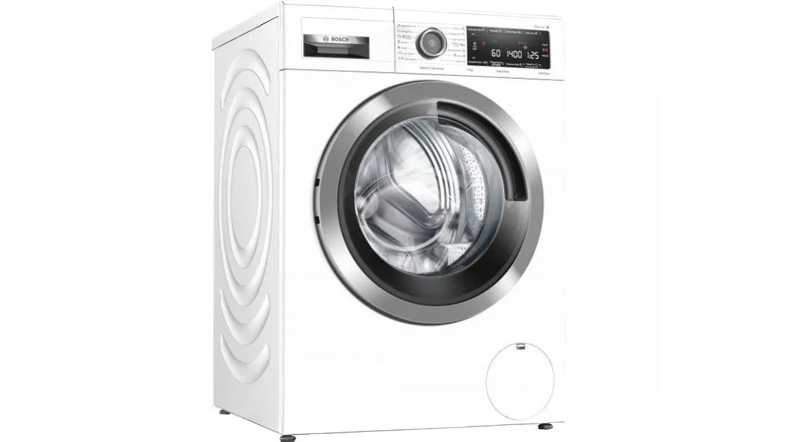
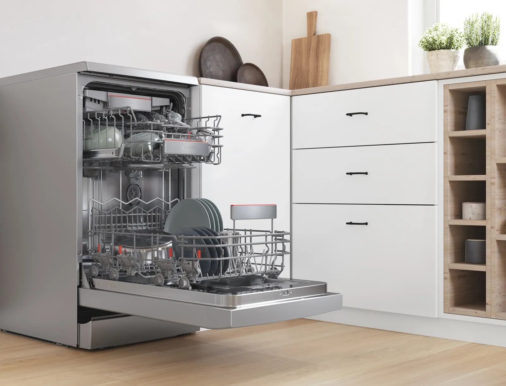
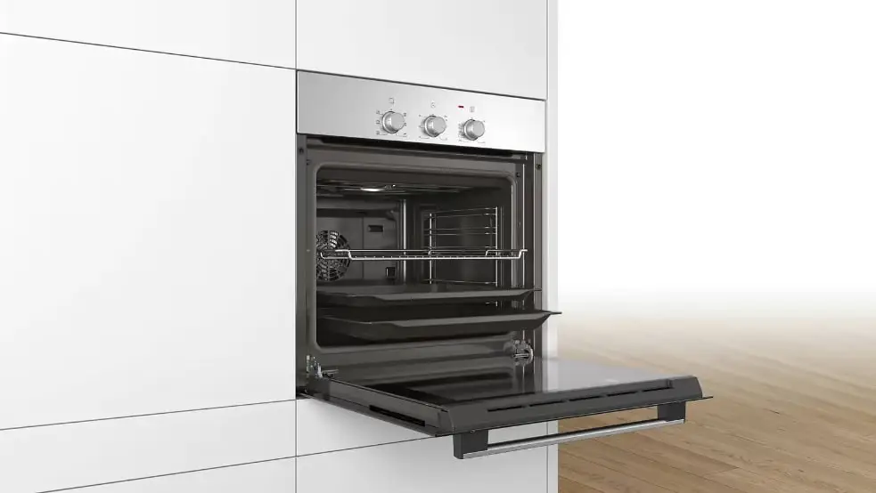
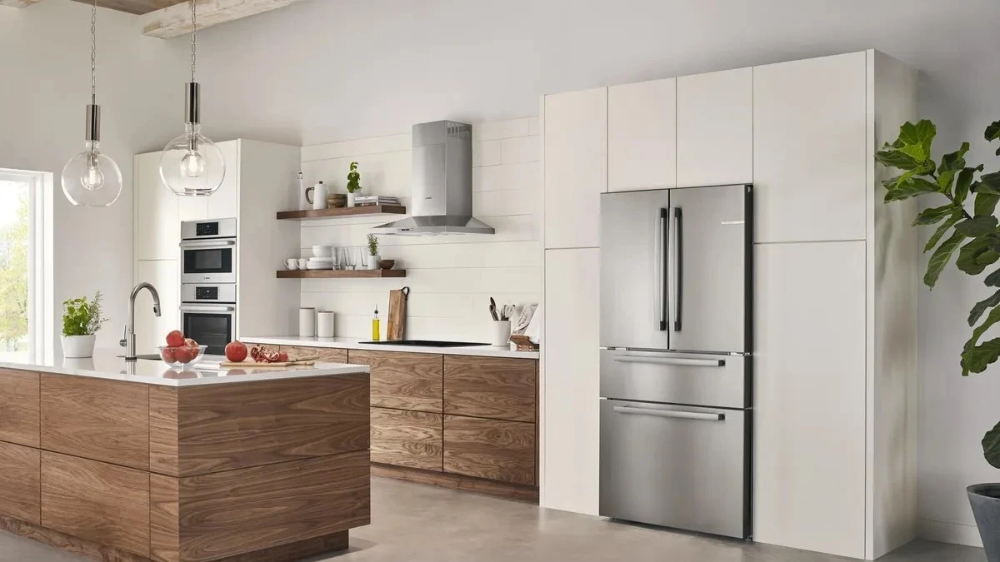

Узгоджений виїзд
Візит майстра у зручний час
Діагностика на місці
Інструментальна дефектація без вивезення
Надійні деталі
Оригінальні або якісні сумісні вузли
Акт робіт
Фіксація гарантійного терміну
Категорії приладів для обслуговування
Оберіть тип техніки для отримання детальної консультації та розрахунку орієнтовної вартості відновлення.

Посудомийні машини

Духові шафи та варильні поверхні

Холодильники та морозильники
Орієнтовна вартість сервісних робіт
Ми дотримуємося відкритої цінової політики. Остаточна сума завжди узгоджується з клієнтом перед початком будь-яких монтажних чи ремонтних дій.
| Найменування послуги | Орієнтовна ціна | Дія |
|---|---|---|
| Виїзд інженера та повна діагностика у Києві Інструментальна дефектація вузла на місці, виявлення несправності | від 900 грн | |
| Терміновий виїзд спеціаліста (протягом 2-х годин) Пріоритетний виїзд чергового майстра у день звернення | від 1 500 грн | |
| Заміна нагрівального елемента (ТЕНа) чи датчиків Для пральних, посудомийних машин, духовок та плит | від 1 400 грн | |
| Ремонт або заміна зливного насоса (помпи) Усунення проблем зі зливом, відновлення гідравліки | від 1 200 грн | |
| Ремонт електронного модуля керування (плати) Компонентне відновлення силовиї ланцюгів та процесора | від 1 800 грн | |
| Заміна підшипників (з розбором бака) Усунення сильного гуркоту/вібрацій при віджиманні | від 3 800 грн |
Часті запитання клієнтів (FAQ)
Відповіді на типові питання щодо процесу ремонту, гарантійних зобов'язань та порядку обслуговування приладів.
Базові проблеми (наприклад, засмічення фільтра зливу пральної машини, перевірка відкриття крана подачі
води або очищення кавовода від накипу) користувач може виконати згідно з інструкцією до приладу. Проте,
якщо на дисплеї висвічується код критичної системної помилки, присутній запах гару, протікання або
іскріння — самостійне втручання небезпечне і може призвести до виходу з ладу дорогого мікроконтролера. У
таких випадках рекомендується довірити інструментальну перевірку фахівцю.
Виїзд інженера та повна діагностика у Києві становить від 900 грн.
Підсумкова вартість ремонту визначається індивідуально залежно від складності несправності та вартості
необхідних деталей. Після проведення діагностики майстер обов'язково узгоджує з вами повний кошторис до
початку будь-яких робіт — ви заздалегідь знаєте точну суму без непередбачених витрат.
Час приїзду фахівця узгоджується під час дзвінка відповідно до графіка завантаженості та ваших побажань.
За наявності вільних майстрів можливий виїзд у день звернення або на заплановану дату.
Обслуговуємо райони Києва та прилеглі населені пункти за попередньою домовленістю.
Після проведення перевірки роботи техніки майстер виписує **акт виконаних
робіт**. У ньому зазначаються перелік проведених дій, вартість та фіксується гарантійний термін на
виконану роботу.
У разі виникнення зауважень щодо функціонування відновленого вузла проводиться перевірка за актом.
Ні, більшість ремонтів великої побутової техніки (пральні машини, холодильники, варильні поверхні,
посудомийки) проводяться безпосередньо у вас вдома. Майстер має при собі повний комплект вимірювального
інструменту та ходових комплектуючих. До стаціонарної майстерні може транспортуватися лише окремий
знятий електронний модуль у випадках складного BGA-паяння або дрібна техніка (кавомашини, пилососи).
Контакти та сервісна підтримка
Залиште заявку на зворотний дзвінок або зв'яжіться з нашими інженерами напряму через телефон чи месенджери.
Контактна інформація
Звертайтеся для первинного узгодження несправності, уточнення деталей та запису на візит майстра.
Основний номер зв'язку:
Додаткова лінія:
Години роботи:
Пн–Сб: 08:30 – 20:00
Нд: 10:00 – 17:00 (черговий режим)
Нд: 10:00 – 17:00 (черговий режим)
Майстерня та прийом техніки:
м. Київ, бульвар Вацлава Гавела, 16
Київ, бульв. Вацлава Гавела, 16
Відкрити в Google Maps ↗
Форма виклику інженера
Заповніть контактний номер, і черговий фахівець зв'яжеться з вами для уточнення симптомів поломки.